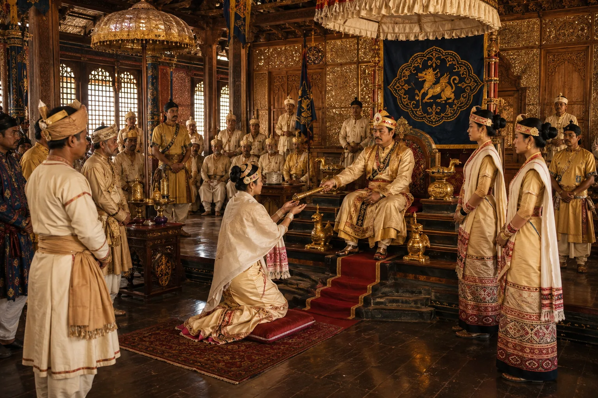

Transfer of Royal Power to Queen Phuleswari (Bar Raja)
1722 · The Tungkhungia kings

Panicked by astrological predictions of Chhatra-bhanga (loss of kingship), Siva Singha transfers the sovereign umbrella, royal seal, and rule to his chief queen Phuleswari.
Sources have not yet been catalogued for this record.
People: Phuleswari (Pramatheswari), Siva Singha (Sutanphaa)
Open this scene in the interactive archive · Follow this event on MAP